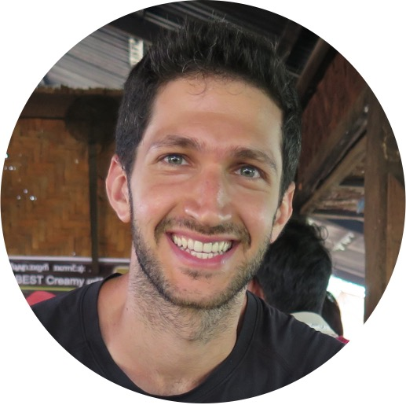

|
Elad Hirsch
I am a PhD candidate at the Technion Institute of Technology in Haifa, Israel, under the guidance of Prof. Ayellet Tal from the Electrical & Computer Engineering faculty (CGM lab).
I am interested in visual perception and image understanding.
My research focuses on vision-language tasks with limited data, specifically describing images with text in scenarios where paired data is scarce or unavailable.
Hence, it involves visual understanding, language modeling, and multi-modal representation learning.
Additionally, I have been teaching the 'Image Processing & Analysis' course for five years, where I am happy to share my enthusiasm for digital image understanding.


|

|
[Jan 2024] I will present our work on Asymmetric Image Retrieval using Ensembles in the first oral session of WACV
[Oct 2023] Two of our works, CLID and Asymmetric Image Retrieval using Ensembles, were accepted to WACV
[July 2023] Our work LIMITR was accepted to ICCV
[Jan 2023] I am mentoring the 10th-grade students of Kogel High School in their AI projects
[June 2022] I am interning at Meta Reality Labs for the summer, collaborating with Erez Farhan
[May 2022] I was awarded the Porat Prize for outstanding graduate students
|
|
|